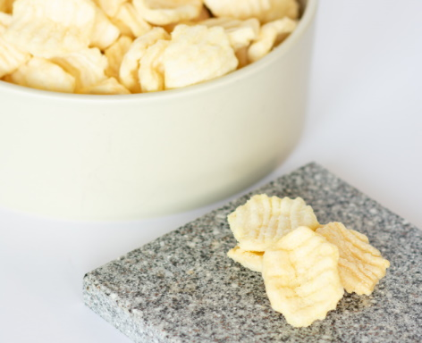
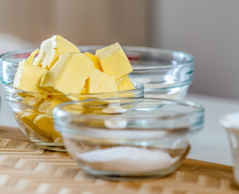
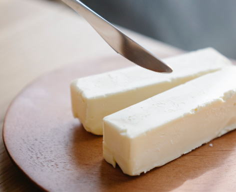

Butter is the staple of all good food. Whether you're baking a cheesecake or frying up an egg, your butter will either make or break the meal. We recommend you never run that risk again. We've put together an arsenal of tools to guarantee success in all butter related activities.
Learn to Make Butter

Nothing beats the taste of cookies fresh out of the oven, but we bet we can make them better. Fresh, home-made butter could be exactly what you need to take your baking to the next level. Learn how to make butter today!
Make Butter
Find Butter Near You

Got butter? Seriously though, running out of butter never happens at a convenient time. Whether you're making toast or trying to whip up some tasty treats, its sure to ruin your day. If we could promise you'd never run out of butter again, we would. Instead, we can promise to help you find the closest source of fine butter near you. Try out our Butter Finder today!
Find It
FAQ

Have questions about what butter can do for you? Unsure why this website exists? Visit our FAQ to find the answers to the questions you never asked!
Answers